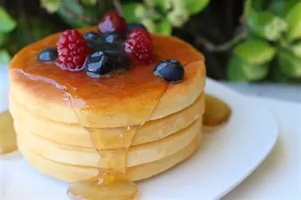

Pancakes

A pancake (or hot-cake, griddlecake, or flapjack) is a flat cake, often thin and round, prepared from a starch-based batter that may contain eggs, milk and butter and cooked on a hot surface such as a griddle or frying pan, often frying with oil or butter.
Ingredients
- 1 cup all-purpose flour
- 1 teaspoon baking powder
- ½ teaspoon baking soda
- ¼ teaspoon salt
- 1 cup milk
- 1 egg
- 2 tablespoons vegetable oil
Steps
- Preheat a lightly oiled griddle over medium-high heat.
- Combine flour, sugar, baking powder, baking soda and salt. Make a well in the center. In a separate bowl, beat together egg, milk and oil. Pour milk mixture into flour mixture. Beat until smooth.
- Pour or scoop the batter onto the hot griddle, using approximately 1/4 cup for each pancake. Brown on both sides and serve hot.